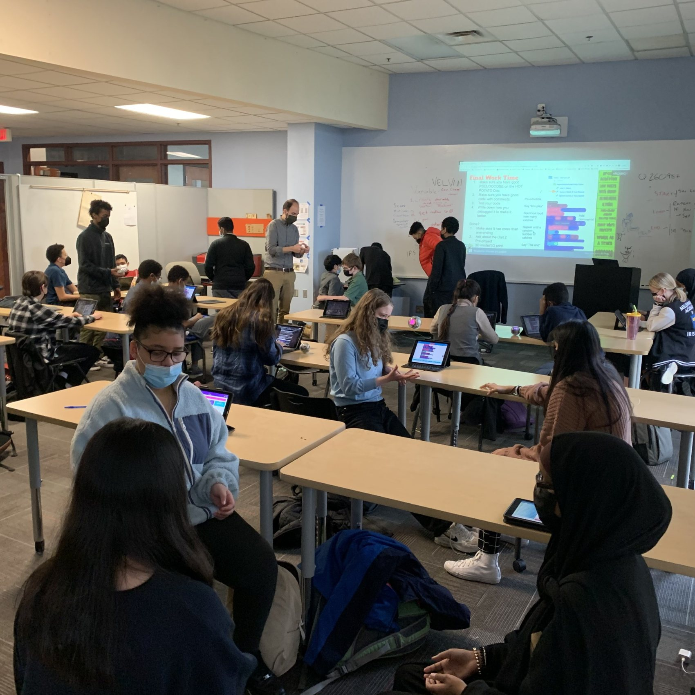
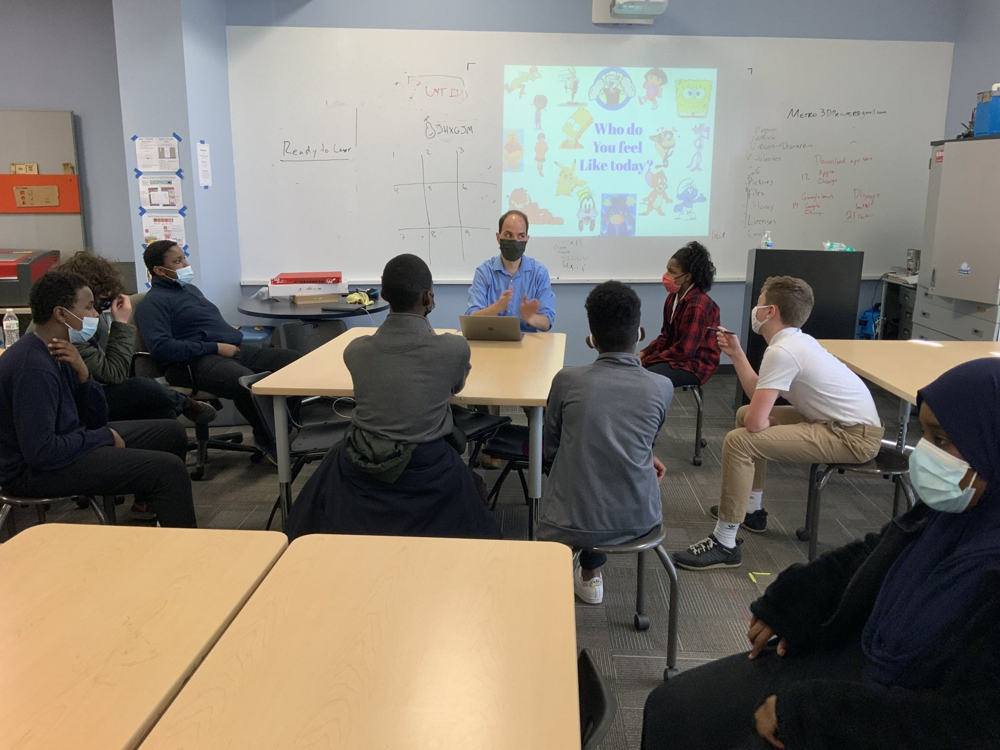
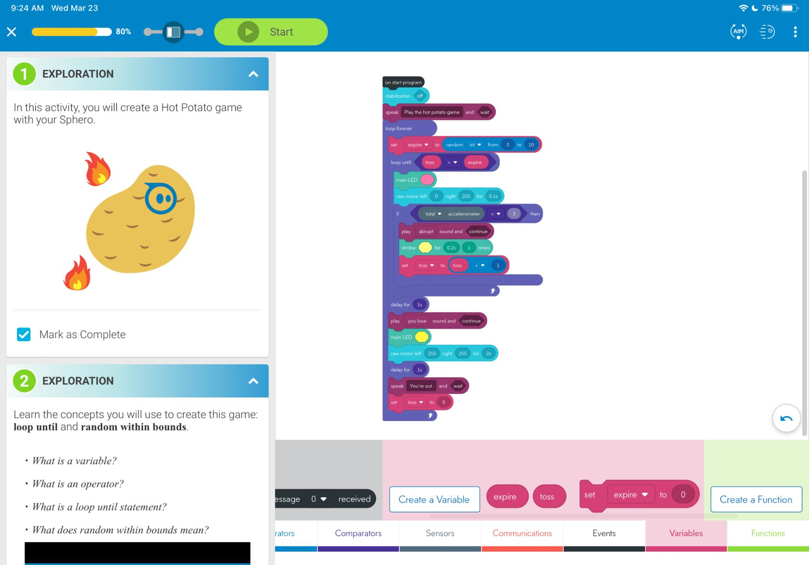
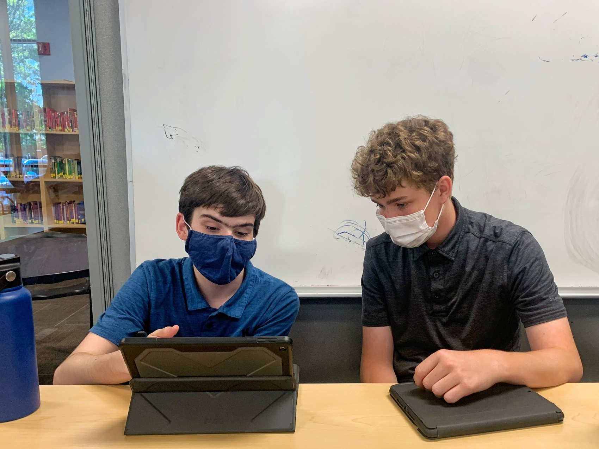
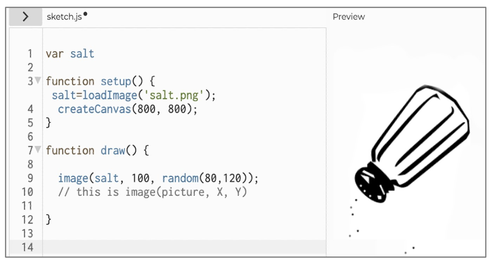
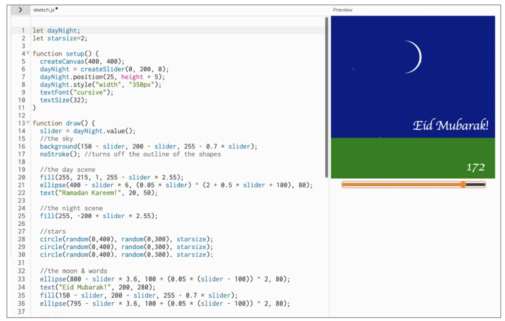

Pair Programming in Computing Education
This research examines how middle-school students develop computational thinking through pair programming, an approach in which two learners work together on the same programming task, taking complementary driver and navigator roles. In a diverse Ohio middle-school setting, students created interactive programs and animations while negotiating ideas, sharing responsibility, and learning from one another.
The research explores how students’ attitudes toward programming and collaboration, prior experiences, and mutual engagement relate to their own and their partners’ learning. Findings highlight the importance of positive collaboration attitudes and the quality of peer interaction, alongside challenges such as uneven participation, communication difficulties, and coordinating different ideas. The project informs the design of more inclusive, supportive collaborative computing experiences for K–12 learners.
Research in Action






Research Team
 Fan Xu
Fan XuPublications
Xu, F., & Correia, A.-P. (2025). Fostering computational thinking: Individual factors and mutual engagement in middle-school pair programming. Journal of Computer Assisted Learning, 41(6), e70147. https://doi.org/10.1111/jcal.70147
Xu, F., & Correia, A.-P. (2024). Measuring mutual engagement in the context of middle-school pair programming: Development and validation of a self-reported questionnaire. Computers in Human Behavior Reports, 14, 100415. https://doi.org/10.1016/j.chbr.2024.100415